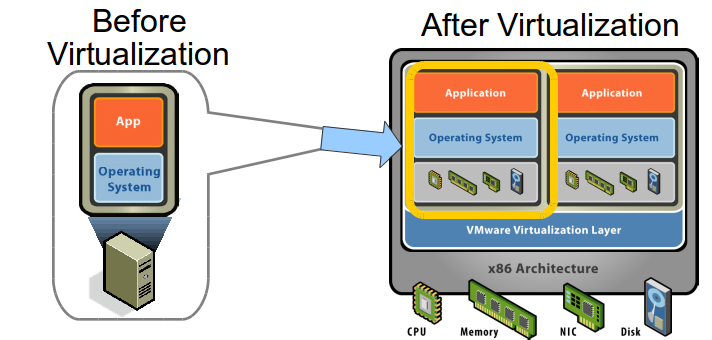

Lecture 1
CprE 308
January 13, 2013
About Me
- Brian Peck
- bpeck@iastate.edu
Why learn about Operating Systems?
A computer, and ....

More than a computer, and...
- Sensing & medical devices

More than a computer, and...
- Cyber-assisted Critical Infrastructures

Tech Trend: Virtualization

Tech Trend: Virtualization
Idea:
- Decouple [ OS, service ] pair from hardware
- Multiplex lightly-used services on common host hardware
- Migrate services from host to host as needed
- Introduce new [ OS, service ] pairs as needed
- Examples: VMWare, Xen, Parallel, etc.
Tech Trend: Mobile/Networked/Distributed Apps
Tech Trend: Mobile/Networked/Distributed Apps
- Webinar
- Stock Information
- On-line TV/Video
- Group-based Apps: Google Docs, Multiplayer games